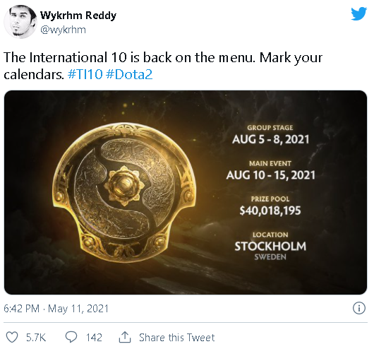
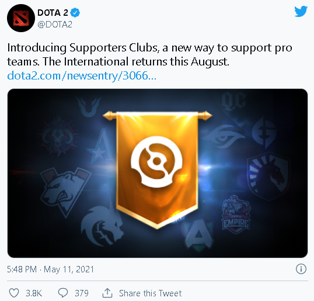

TI News!
Finally. More than one year removed from the indefinite postponement of The International 10, Valve has
confirmed a new date for the event. Wykrhm Reddy announced the news on Twitter:

The International 10 will run from August 5 to August 15, 2021.
As previously announced, the event is set to take place in Stockholm, Sweden and will be operated by PGL. TI10
will begin with the group stage on August 5, which runs until August 8. There is a day off on August 9, followed
by the main event which kicks off on August 10.
Though it has not yet been confirmed, it is likely that The International 10 will follow similar formats to
those of previous installments of the event. The event will feature 18 teams, with the group stage being a
two-group round robin where the worst teams from either group are eliminated. The top four from either group
start in the upper bracket while the other four survivors start in the lower bracket.
It is unclear whether The International 10 will boast any sort of crowd or media presence. The ONE Esports
Singapore Major, the first interregional tournament hosted in a live setting in over a year, had no crowd and
teams did not come into contact with one another during the event. Ideally, the situation will be better come
August, but it is unclear whether things will have progressed well enough to safely host an indoor crowd.
While the news of an official date for TI10 is very welcome for Dota 2 fans, that precise prize pool number is
not. Reddy stated that TI10 will have a prize pool worth $40,018,195. That’s the prize pool that was previously
generated through The International 10 Battle Pass in 2020.
Questions have been lingering in regards to what will happen with the $40 million prize pool from TI10. This was
due to the assumption that Valve would simply run another battle pass in 2021, but Valve seems to be moving in a
different direction that would see the battle pass canceled.

This suggests that there won’t be a battle pass in 2021, but may be something else that fills that void. Whether
that marks the end of The International Battle Pass permanently is unclear, but it doesn’t seem as though
anything similar will ship this year.
Worth noting is that Valve explicitly stated that none of the money from these events will be pumped into The
International prize pool. If none of this money ends up going into the pro scene, it likely means that Valve is
pocketing an extra eight-figure sum of cash that would have otherwise gone into the pockets of Dota 2 esports
professionals. This may be offset to some degree by the newly introduced "Supporters Clubs," but odds are that
very few teams will ultimately reap any significant income from the new feature.